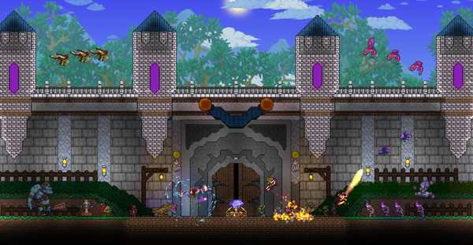
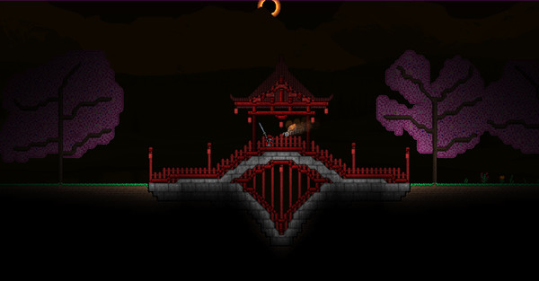
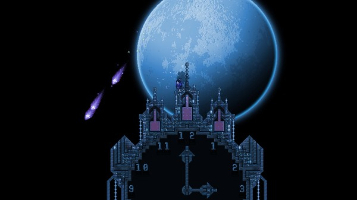

Terraria Review
Imagine what Minecraft might be like if it had been made with pixel art sprites and released in the SNES era. That sums up the overall vibe of Terraria pretty well. It also explains why I just can't seem to tear myself away from the darned thing. This devious little indie sandbox title borrows so many ideas from Notch's game that it essentially is Minecraft in 2D, but it also beefs up the familiar gameplay in exciting ways. There's a lot more creepy crawly stuff to kill, and the staggering number of doodads you can MacGyver together into deadly weapons to slay them with is mouth-watering. Say what you will; there's some gnarly fun to be had in these uncharted depths.
After you're done customizing your sprite character, Terraria dumps you on the colorful surface of a randomly generated pixel world with nothing more than a handful of tools and the vague sense that you're meant to build stuff, explore the terrain, and battle monsters. Figuring out exactly how that's done is a little puzzling at first. There's a lone guide wandering around the surface, though his advice is random. The lack of a tutorial meant I had to consult the game's Wiki page to get a better sense of how things work and what can be built. Even so, it didn't take long to get the gist. Though there aren't any real story elements or epic quests to conquer, the strong fantasy trappings instill a desire to adventure nonetheless. There's magic, monsters, and mayhem waiting both on the surface and in the dark caverns below. Uncovering unexpected new prizes and perils is a big part of the game's charm.
The entire game world is destructible, and breaking block lets you collect core resources like stone, wood, and iron that can be used to make cool gear or build structures. Rarer resources are dropped when you slay skeletons, floating fanged critters, and other monsters or when you dig deeper into the subterranean underworld. Since such a large portion of Terraria's gameplay revolves around foraging for different components and seeing what you can build with them, the drive to explore every nook and cranny of the landscape kicks in right away. But it's important to temper your desire to set out exploring in hopes of amassing huge quantities of loot with the pressing need to build shelter and expand your spawn point's home base.
Life on the surface follows a day/night cycle. Exploring topside during the daytime is safer – you can pick flowers, roam around, chop trees, and kill weak slimes that roam too close. It's also a perfect time to build houses that serve as shelter and attract helpful NPC characters to your settlement. Things get dicey when night falls; zombie hordes and floating eyeball beasts come out in droves, forcing you to fight or flee. That's less of an issue once you get a sturdy settlement started.
The village development aspect of the game is a clever addition – once you discover it exists. You can throw together bare-bones shacks or craft elaborate fortresses that tower upward into the heavens. Either way, you want to deck them out with enough accoutrements to lure NPCs to your village. These support characters can heal you, sell you items, and offer other helpful services. You have to complete a specific task to attract them, and even then they only appear if you've created a room (complete with walls, furniture, lighting, etc.) for them to stay. This offers some tangible incentives to spend time building, beyond the desire to lord over a large stronghold.
Having an elaborate and ever-expanding home base to return to on the surface is satisfying. However, the dark, foreboding underworld is where the real action is. Everything you need to make the most basic items like torches, furniture, and healing potions can be found near the surface, but you have to adventure deep below to uncover the rarest materials. This is where Terraria's gameplay feels more like an old-school action platformer and where it really sunk its hooks into me. Digging for ore eventually uncovers sprawling caverns that are home to many varieties of creepy creatures. Giant slimes, skeletons, burrowing worms, and tougher beasties roam the dark, and they often come charging at you while you're excavating. Exploring is a lot fun on its own, yet it's the strong emphasis on combat that's really appealing. For one thing, stopping to battle monsters breaks up the monotony of digging. Creatures also drop coins that can be used to buy shop items. There's an added risk versus reward element to combat too. Getting killed causes you to re-spawn on the surface with your gear intact, but you'll leave a chunk of your precious coin stash behind.

The real impetus behind adventuring is driven by the insanely deep gear crafting system. Almost everything you pick up in the game is a component used in forging some crucial piece of kit. There are well over a hundred different weapons and items to build. Though some equipment is more functional – like protective armor, grappling hooks that lets you navigate with greater ease, and treasure chests for storing loot – most of the stuff designed for cleaving monsters into itty bits is just sheer badass. Magical boomerangs, laser pistols, spell books that shoot fireballs, light sabers, and ninja stars are just a handful of the crazier weapons you can build. Hunting down the rare items you need to build the best weapons is obsession forming.
A few other cool nuances enhance the absorbing tasks of exploring, building, and battling away. Journey to the farther reaches of the surface world, and you'll inevitably run into The Corruption – a teeming mass of demonic turf filled with extra danger and extra rewards. You'll also uncover demonic altars for forging special items that can be used to summon one of the game's three spectacular bosses to fight (sporting awesome names like "Skeletron" and "Eater of Worlds"). Terraria's multiplayer mode is a blast too. Co-operatively exploring and building with friends or strangers is even more enjoyable than going solo, depending on the folks you play with. Finding an open public server to play on is a real drag, since most fill up within minutes of being posted on the game's forum. The good news is you can create your own server and share it with your pals (or post it online for others to join).